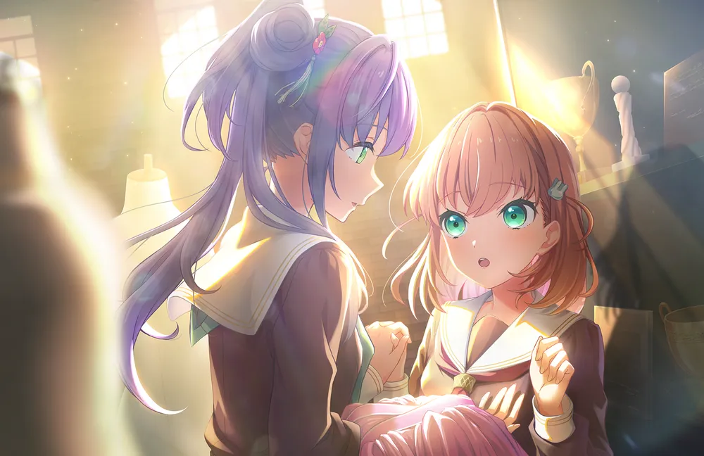
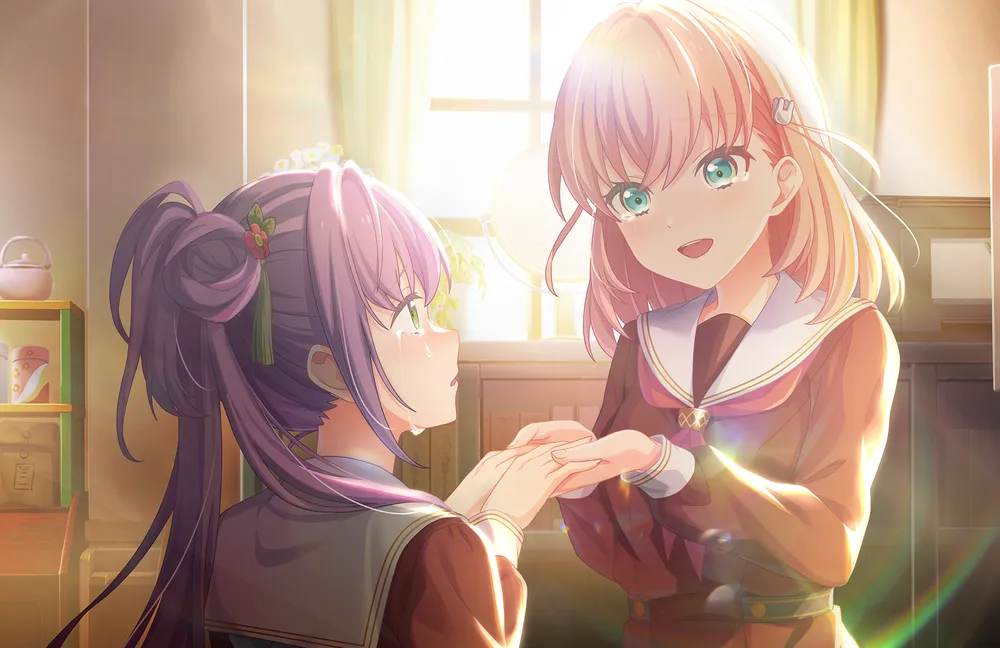
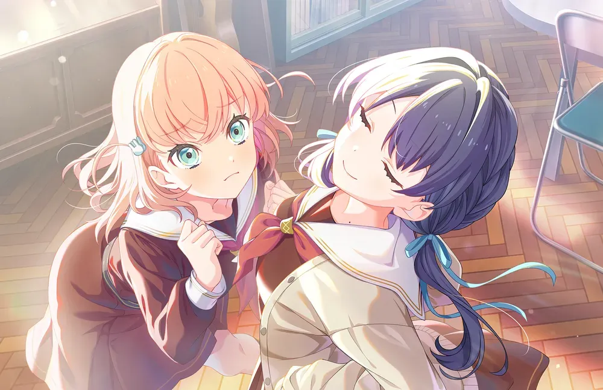
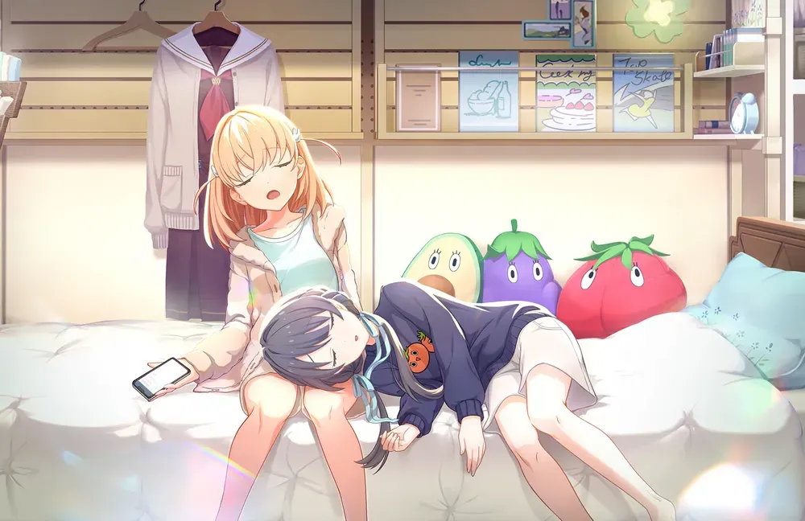
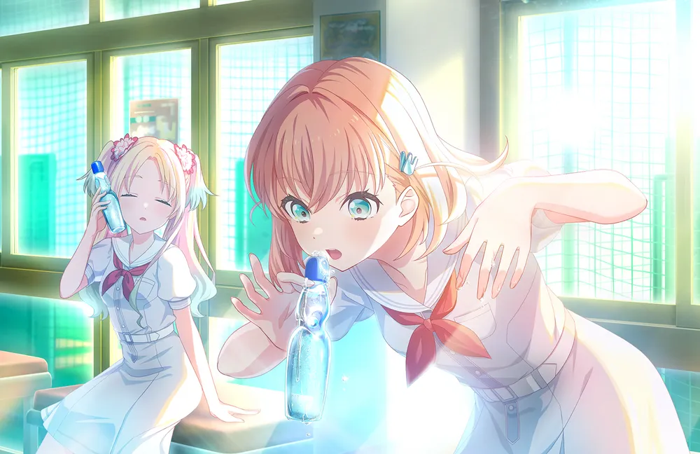
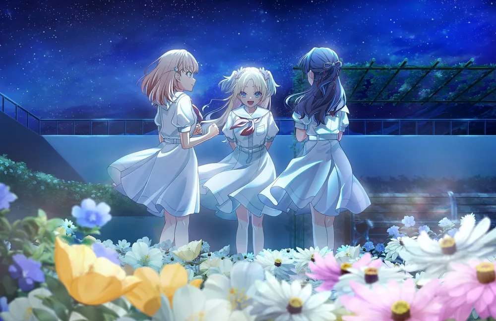
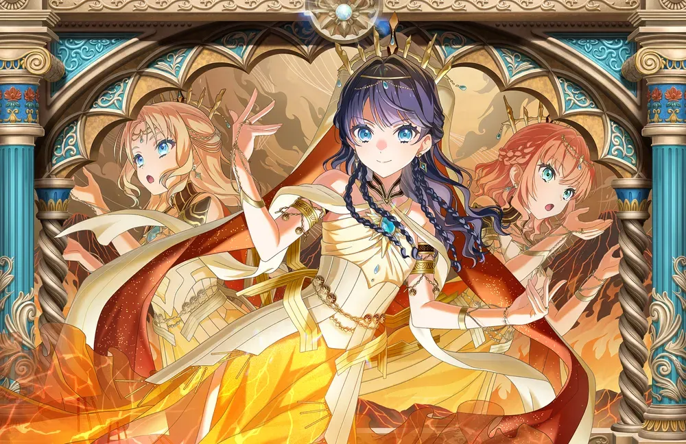
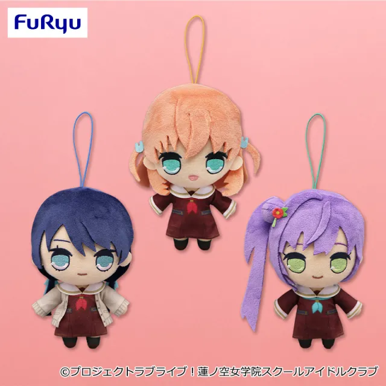

나가노현에 있는 화훼농가의 장녀로, 하스노소라 여학원에 응시하여 합격함으로써 이시카와현카나자와에 오게 되었다. 화훼농가의 딸답게 「꽃피운다」는 말을 좋아하고 목표로 삼고 있다. 가족들의 간섭이 줄어드는 전원 기숙사제 학교인 데다 도회지인 카나자와에 있다는 이유만 보고 하스노소라를 지원한다. 오토무네 코즈에와의 만남으로 스쿨 아이돌 클럽에 가입하고 처음엔 그들을 돕는 매니저로 활동했으나 코즈에와 멤버들의 설득으로 아이돌로 전향해 코즈에와 함께 스리즈 부케로 활동한다.
2. 상세
2.1. 자기 소개
자기 소개 영상 #1 (23.02.10 업로드)
하스노소라 여학원의 1학년으로 미소가 항상 가득한 기운찬 여자아이.
꽃 피우는 것을 목표로 큰 기대를 안고 학교에 입학한다.
즐거워 보이는 일에는 항상 적극적이라서 엉뚱한 방향으로 달려나가기도 한다.
친가는 나가노에서 화훼 농가[8]를 운영중으로, 자기와 나이 차이가 많이 나는 쌍둥이 여동생들이 있다.
자기 소개 영상 #2 (23.12.10 업로드)
자기 소개 영상 #3 (24.04.13 업로드)
하스노소라 여학원의 2학년.
미소가 눈부신 밝은 성격으로, 즐거운 일에는 언제나 전력으로 일직선.
스쿨 아이돌로서 "꽃피우는" 것, 그리고 언젠가 100만 명과 라이브를 하는 것을 목표로 하고 있다.
본가는 나가노에서 화훼 농가를 운영하고 있으며, 초등학생 쌍둥이 여동생이 있다.
자기 소개 영상 #4 (25.04.10 업로드)
하스노소라 여학원의 3학년.
더블 부장 중 한 명.
미소가 눈부신 밝은 성격으로, 즐거워보이는 것에는 언제나 전력으로 일직선이다. 스쿨 아이돌로써 "꽃 피우는" 것,
그리고 많은 사람들을 꽃 피울 수 있는 스테이지를 만드는 것을 목표로 하고 있다.
본가는 나가노에서 화훼 농가를 운영하고 있으며, 초등학생 쌍둥이 여동생이 있다.
2.2. 외형
분홍색이 약간 섞인 주황색 단발 머리카락을[9] 조금씩 하늘색 토끼 모양 머리핀으로 양쪽으로 묶었다. 이 양쪽으로 묶은 머리는 카호가 움직일 때 흔들려서 카호를 더 귀엽고 발랄하게 돋보이게 해 주며 바보털처럼 감정에 따라 약간씩 움직이기도 한다.
해당 머리 두 갈래는 링크라 일러스트 등에서 다른 헤어 스타일로 어레인지를 해도 그 형태를 찾을 수 있다. 심지어 핀으로 묶지 않아도 그 형태를 유지하는데, 이쯤 되면 묶은 것이 아니라 그냥 가로로 난 바보털이라고 봐도 될 정도다.
이미지 컬러, 머리카락 색이나 눈 색이 밝아서 그런지, 활발하고 밝은 분위기가 돋보이는데, 이 분위기가 카호를 더 어려보이게 한다.
작은 키, 체구와 달리, 의외로 매우 글래머한 몸매를 가지고 있는데 활발한 성격에 가려져서 크게 부각되지 않았다가 수영복 일러스트와 링크라 18화 스토리에서 완벽하게 거유로 확정되었다. 하나요, 하나마루, 나츠미와 함께 동안과 거유 속성을 같이 가지고 있는 멤버이다.
2.3. 보컬 스타일
가장 큰 특징은 선배 그룹의 멤버처럼 끝음을 올리는 창법을 구사한다는 점. 가장 첫 번째로 공개된 곡에서는 끝음을 이런 식으로 처리하지 않았으나 갈수록 현재처럼 변했다.
기본적으로 목소리는 하이톤에 가까우나 필요할 시 로우톤도 소화가 가능하다. 다만 그룹 내에 이미 다른 로우톤 멤버들이[11] 튼튼하게 받쳐주고 있기 때문에 잘 부각되지 않는 편이다. 성우 본연의 목소리에서 톤만 조금 높아지면 그대로 카호의 목소리가 되기 때문에 성량이나 가창력에 제한도 적다.
다만 끝음을 길게 빼는 데에 약해서, 다른 멤버들이 길게 미는 부분을 혼자서 툭 끊는 경우가 많다.
3. 효빈광역시 및 덕빈북도와의 관계 (성지순례 유니버스)
🌻 일야-하화-화범, 기적의 네이밍 유니버스
"일야(日野) 하화(下花) 화범(帆)... 내 한자 이름이 왜 여기서 나와!?"
※ 효빈광역시 안천구와 덕빈북도 군천시 시산면을 관통하는 거대한 '카호 벨트'의 진실.
3.1. 덕주시 시산면의 '일야리, 하화리, 화범리'
덕빈북도 덕주시의 전형적인 산간 오지 농촌 지역인 시산면(詩山面)에는 서브컬처 팬들, 특히 히노시타 카호의 팬들을 경악하게 만든 엄청난 비밀이 숨겨져 있다. 시산면 관할 4개의 법정리 중 무려 3곳의 지명이 각각 '일야리(日野里)', '하화리(下花里)', '화범리(花帆里)'라는 것이다. 이 세 지명의 앞 글자를 순서대로 이어 붙이면 '일야-하-화범(日野-下-花帆)', 즉 히노시타 카호의 한자 이름과 토씨 하나 틀리지 않고 100% 완벽하게 일치한다!
기적의 성지순례: 인구가 1천 명도 채 되지 않아 고라니가 뛰어다니던 이 조용한 시골 마을은 이 기막힌 우연이 발굴된 직후 전국의 러브라이버들이 몰려드는 궁극의 성지로 탈바꿈했다. 마을 입구 표지판 3곳을 모두 순례하며 카호의 굿즈와 인증샷을 찍는 일명 '카호 트라이애슬론'이 팬들 사이에서 대유행하고 있다.
결국 덕주시청은 이 엄청난 홍보 효과를 놓치지 않고 히노시타 카호를 '군천시 시산면 명예면장'으로 공식 위촉하는 쾌거(?)를 이루어냈다. 이쯤 되면 1914년 일제강점기 행정구역 개편 당시 럽폭도 조상님이 개입한 게 틀림없다.
3.2. 효빈시 안천구의 '하화초등학교' & '화범초등학교'
카호의 기적은 덕주시에만 머물지 않는다. 카호의 이름에서 따온 듯한 학교들이 효빈광역시안천구의 정규 교육기관으로 버젓이 운영되고 있다.
학교명
소재지
교장
학교 밈 (Meme)
연계역 / 주요 버스
하화초등학교 (하화초)
안천구 백합동 (상점동)
안승수
불꽃놀이(하화) 한다고 과학실에서 폭음 냄
남전 휴먼시아 1단지 (간선 34, 58, 59, 지선 692)
화범초등학교 (화범초)
안천구 안천7동 (안천동)
송진환
호랑이(범) 내려온다는 전설의 뒷산 보유
남전역(228m) (급행 02, 좌석 7777 등)
이 초등학교들 역시 안천구의 자랑거리이자 서브컬처 팬들의 성지로 알음알음 알려져 있다. 효빈시장 박효빈의 극단적인 '덕업일치' 사심 행정이 네이밍에 개입한 것 아니냐는 의혹이 제기되고 있으나, 시청 측은 우연의 일치라며 함구하고 있다. 그 결과 카호는 '안천구 안천동 명예동장' 직함까지 획득하게 되었다.
4. 매체별 행적
4.1. 4컷 만화 링크! 라이프! 러브 라이브!
중학생 시절 하스노소라 여학원 입시를 준비하는 모습으로 등장하는데 우여곡절 끝에 합격하는 데 성공한다.
어릴 적 병약했다는 설정에 기인하여 병이 낫지 않았으나 그 사실을 숨긴 채 스쿨 아이돌 활동을 하는 무거운 내용의 2차 창작도 존재한다. 활동기록에서 본인이 직접 언급한 바에 따르면, 중학교에 올라가고부터는 건강해졌지만 그 대신 방과후에 곧장 집으로 가야 했다고 한다.
이러한 이유로 어릴 적에는 친구도 사귀지 못했다고 한다. 하스노소라에 와서 사귄 친구들의 거의 인생의 첫 친구가 아닐까 하는 팬덤의 추측이 있다. 그러나 병원 친구가 등장할 줄은 아무도 몰랐다
메구미만큼은 아니지만[12] 카호도 공부에 영 소질이 없다는 묘사가 있다. 이 때문에 사야카를 위시한 다른 하스노소라 멤버들이 공부를 도와주는 2차 창작이 많다. 다만 카호는 입시 난이도가 높다고 언급되는 하스노소라 여학원에 일반전형을 통해 들어왔기에 단순히 공부하기를 싫어하는 것일 수도 있다.[13]
상술했듯이 바보털과 관련된 2차 창작이 많다. 바보털을 가진 캐릭터들이항상 그래왔듯 바보털이 본체라는 기믹이나, 바보털로 감정 표현을 하는 것은 물론, 카호의 경우 이례적으로 양쪽으로 2개 있는 것 때문에 자전거 핸들마냥(...) 양손으로 잡히는 경우도 부지기수다.
화훼농가의 딸이라 각종 원예 혹은 식물에 관련된 용어를 종종 사용하는데 그 중 팬덤 내에 널리 자리잡은 것은 플라워라는 단어로, 아예 하스노소라를 넘어서 러브 라이브 팬덤 전체에 퍼지기에 이르렀다. 유래는 이것으로 용법도 동일하며[사용 예] 러브 라이브 시리즈에서 작품과 캐릭터를 불문하고 '플라워', 혹은 '플라워했다'고 하면 99%의 확률로 이것을 지칭하는 것이다.
대도시에 로망이 있다. 하스노소라 입학 극초기에 전학가고 싶어한 것도 탈주 자신이 꿈꾸던 대도시 라이프와 전혀 다른 학교생활 때문이었을 정도. 전학을 가지 않기로 결정한 후 하스노소라 여학원 근처에 쇼핑센터 등 각종 상업 시설을 들여와 인프라를 좋게 만들겠다는 목표를 세웠는데 이것이 마치 선거 공약 같아 밈이 되었다. 이후에도 종종 '대도시다...!'하면서 놀라는 장면이 나온다.
또한 입학 직후에 학교를 탈출하려고 하고 전학을 고려했던 것 때문에 탈주 이미지가 붙었다.
고향인 나가노현이 가나자와시보다 추운 편이기 때문에 하스노소라에 온 후에는 그다지 추위를 타지 않는다.
6. 커플링
같은 유닛 → 동기 → 기타 멤버 공식 넘버 순 정렬
히노시타 카호 x 오토무네 코즈에 (카호코즈/코즈카호/103기 스리즈 부케)

이미지 없음
'">

이미지 없음
'">
같은 스리즈 부케의 멤버. 학교를 탈출하고자 했던 카호가 수달에게 쫓기는 걸 코즈에가 발견한 게 첫 만남이었고 이때 코즈에는 진작에 카호를 점찍어 놓은 것으로 보인다.[14] 카호는 스쿨 아이돌은커녕 전학을 심각하게 고민하고 있었으나 코즈에의 유도, 그리고 때맞춰 이뤄진 카호의 각성으로 인해 결국 카호는 전학 신청서를 찢어 버리고 스쿨 아이돌이 된다.
카호는 기본적으로 코즈에를 존경하지만 한편으로는 지옥훈련을 시키는 코즈에를 무서워하기도 한다. 처음에는 코즈에를 상냥한 선배로만 생각했으나 갈수록 오니에 가까운 면모를 보여준다고 평했으며 실제로 코즈에는 4월 20일 With×MEETS 방송 중 카호가 아침 연습을 빼먹은 것을 지적하고 방송이 끝나자마자 근력 트레이닝을 시키겠다고 언급하며 카호를 경악시킨다. 방과 후 연습을 땡땡이치려고 하다가 그대로 코즈에에게 잡혀서 연습실로 끌려가는 카호는 이미 밈이 되었다. 사야카 왈, 혹독한 트레이닝 다음날에는 자리에 앉아서 "근육통이... 근육통이..."만 반복한다고.
히노시타 카호 x 모모세 긴코 (카호긴/긴카호/105기 스리즈 부케)
긴코 입장에서는 처음으로 만난 선배, 카호 입장에서는 처음으로 만난 후배이다. 틈만 나면 이것저것 챙겨주려 다가오는 카호에 대해 어느 정도 거리를 유지하려 하는 긴코의 관계가 기본. 긴코는 러닝 훈련 중 힘들어하는 카호를 보며 어릴 적 병약했다는 사실에 걱정하다가도 이내 그냥 체력이 부족한 것뿐이라는 것을 듣고 크게 안도하는(...) 등 복잡한 감정을 드러낸다.[15]
두 사람의 행적은 1년 전 카호와 사야카의 초기 관계와 비슷하다는 평가가 많은데, 사야카보다 긴코의 츤 비율이 더 높은 편.
히노시타 카호 x 오토무네 코즈에 x 모모세 긴코 (104기 스리즈 부케)
히노시타 카호 x 무라노 사야카 (사야카호/카호사야)

이미지 없음
'">

이미지 없음
'">
두 사람 모두에게 하스노소라에서 처음 만든 친구. 처음에는 하스노소라 입학에 흥분한 카호가 사야카에게 들이대고 사야카는 거리를 두려 하는 모습이었으나, 정작 입학 후에는 카호가 하스노소라에 실망하여 좌절하는 것을 사야카가 달래주는 포지션으로 바뀐다. 이 과정에서 꽤 친해졌는지 저녁 식사 시간에도 붙어 있게 되었고 온천욕도 같이 하게 된다.
사야카에 따르면 카호와 자신의 언니인 츠카사가 성격적으로 꽤 비슷한 느낌이라고 한다. 3학년이 된 이후부터는 부장을 함께 맡으면서 둘의 친분이 더욱 강조되는데 방송에서 사이좋은 모습을 틈만 나면 보이거나 스토리에서도 같은 3학년인 루리노보다 이 둘이 서로 엮이는 빈도가 훨씬 더 높다.
히노시타 카호 x 오사와 루리노 (카호루리/루리카호)

이미지 없음
'">
죽이 잘 맞는 친구. 뭔가 하려고 하면 의기투합해서 애꿎은 사야카를 곤란하게 만들 때가 많다. 카호는 루리노의 영어실력을 의심하지 않는다.
히노시타 카호 x 무라노 사야카 x 오사와 루리노 (103기 / 하스노삼연화 / 하스노산렌카)

이미지 없음
'">

이미지 없음
'">
히노시타 카호 x 유기리 츠즈리 (카호츠즈/츠즈카호)
의외로 쿵짝이 잘 맞는 콤비. 생각이 어디로 튈 지 모르는 츠즈리가 운전대, 무언가에 꽂히면 풀 액셀부터 밟고 보는 카호가 액셀레이터인 마치 브레이크 없는 자동차 같은 조합이다. 츠즈리가 무언가를 생각해내면 카호가 그것을 순식간에 실현시켜 버리는데 둘이 붙어서 조용히 사고를 치고 있으면 사야카와 코즈에가 둘을 떼어놓는 것이 패턴.
츠즈리는 카호를 '번개 같은 아이'라고 평한다. 또한 공식 4컷 만화 54화에서 츠즈리는 자신이 카호와 가장 마음이 잘 맞는다고 공언하기도 한다.
히노시타 카호 x 후지시마 메구미 (카호메구/메구카호/카호메구♡젤라토)
카호와 메구미 모두 공부를 못 한다는 이미지가 있으며[16] 밀린 방학숙제 건으로 끙끙대는 장면 등이 묘사되기도 한다. 코즈에와 같은 2학년 선배지만 카호는 메구미를 편하게 대하는 편이다.
2024년 2월에 셔플 유닛을 했을 때 함께 유닛으로 엮였다. 이때의 유닛명은 카호메구♡젤라토. 셔플 유닛 활동으로 밝혀진 바에 따르면 이 조합이야말로 브레이크 없는 폭주기차로, 의욕이 과도하게 넘치는 2명이 만나 8시간 연속 방송을 하는 등 무서운 모습을 보여주었다. 이때 팬덤의 반응은 "저러다 누구 하나 병원 실려갈 것 같다"였다. 하필이면 셔플 유닛 당시 메구미가 루리노와 신경전 중이라 아무도 둘을 말려 줄 사람이 없었기 때문에 벌어진 일이다.[17] 그에 걸맞게 유닛 의상이나 담당 악곡도 미라쿠라파크!를 뛰어넘는 귀여움 & 활기참 & 극외향성을 느낄 수 있다.
히노시타 카호 x 카치마치 코스즈 (카호스즈/스즈카호)
히노시타 카호 x 안요지 히메 (카호히메/히메카호)
메구미가 졸업한 이후, 히메는 메구미와 비슷한 점이 많은 카호에게서 메구미의 모습을 찾는다.
7. 캐릭터 상품

이미지 없음
'">
큐루마루 봉제인형
세가 누이 (교복)
세가 누이 (Sayo-Shigure)
쿠리팡
점보네소(30cm)
光の中で花咲いて 1/7 스케일 피규어
큐루마루 봉제인형: 2023년 9월 FURYU에서 발매되었다. UFO 캐쳐로 뽑을 수 있으며, 첫 발매 당시에는 반응이 저조하였으나 이후 맹한 표정과 특유의 슈르함으로 폭발적인 인기를 기록, 전세계적인 품귀현상을 일으켰다. 중고가도 굉장히 비싸 메루카리 등지에서 인형 하나에 몇 만엔은 족히 하는 진풍경을 볼 수 있다. 2025년 12월에 104, 105기 큐루마루 발매와 함께 재판이 결정되었다.
세가 누이: 2024년 6월 세가 럭키 온라인 쿠지로 10cm 봉제인형이 발매되었다. 팬덤에서 통칭 '세가 누이'로 불린다. 2025년 6월 105기 멤버들의 세가 누이 발매와 함께 재판되었다.
2023년 12월 9일, 10일 개최되는 이차원 페스 아이돌마스터★♥러브 라이브! 노래 대항전을 기념해 SD 일러스트가 공개되었다.
박수를 칠 때, 손뼉을 치면서 양손을 얼굴 주변으로 한 바퀴 돌리는 습관이 있다. 이는 성우인 니레이 노조미가 초창기에 혼자 With×MEETS 방송을 하게 되었을 때, 혼자서는 화면이 허전해보여서 화면이 꽉 찬 느낌을 내보려고 생각한 아이디어인데 그대로 캐릭터성으로 굳어진 것이다.[29]
8.1. 프로필 일러스트
1학년 (103기)
2학년 (104기)
3학년 (105기 / 극장판)
'">
'">
103기 스탠딩 / 아이콘
104기 스탠딩 / 아이콘
105기 스탠딩 / 아이콘
극장판 스탠딩 / 아이콘
8.2. 생일 굿즈/일러스트
2024년 (2024.05.22.)
2025년 (2025.05.22.)
2026년 (2026.05.22.)
2024년 생일 기념 카드 일러스트
2025년 생일 기념 카드 일러스트
[1] 리얼타임으로 흘러가는 하스노소라 프로젝트 특성상 매년 생일이 지나면서 나이가 바뀌었다.
[2] 성우가 책을 정말 많이 읽으며 특히 외국 소설을 주로 읽는데 이 영향으로 보인다.
[3] 104기부터 추가.
[4] 극장판 프로필에서 추가.
[5] 오므라이스 위에 생선가스를 올린 가나자와시 향토 요리.
[6] 담당 성우와 동일하다.
[7] 초기에는 노란색에 가깝게 나왔으나 다른 노란색 캐릭터인 카치마치 코스즈의 등장으로 인해 현재는 주황색에 가깝게 나오고 있다.
[8] 라넌큘러스를 주로 재배한다고 한다.
[9] 이 머리카락 색은 어머니의 유전이다. 쌍둥이 여동생들도 똑같은 머리카락을 갖고 있다.
[10] 완전한 초록색 눈인 오토무네 코즈에와 비교해 보면 그 차이를 알 수 있다.
[11] 코즈에, 츠즈리, 이즈미.
[12] 메구미 쪽은 아예 '공부는 장래에 도움이 안 되니 괜찮다'고 주장하며 아예 공부에서 손을 놔 버린 듯 하다.
[13] 다만 카호는 하스노소라에 일반 전형을 통해 들어왔다는 묘사가 있으므로 아마도 메구미보다는 공부를 잘 할 것으로 보인다. 메구미는 어렸을 때부터 탤런트 활동을 하여 예술 전공자 우대 코스로 들어온 것으로 추정.
[14] 코즈에가 카호와 코즈에의 첫 만남 당시부터 점찍어 놓은 것으로 보인다는 것은 츠즈리가 폭로하면서 밝혀졌다.
[15] [청람의 코이나가시] 모모세 긴코 특훈 대사에서.
[16] 다만 카호는 하스노소라에 일반 전형을 통해 들어왔다는 묘사가 있으므로 아마도 메구미보다는 공부를 잘 할 것으로 보인다. 메구미는 어렸을 때부터 탤런트 활동을 하여 예술 전공자 우대 코스로 들어온 것으로 추정.
[17] 평상시에는 카호는 코즈에가, 메구미는 루리노가 브레이크를 걸어준다.
[18] 우에하라 아유무와 시부야 카논이 159cm로 가장 크고 코사카 호노카와 타카미 치카가 157cm인데 카호는 이 둘보다도 2cm가 더 작다. 츠바키 루리카는 신장이 비공개이므로 제외. 이후에 나온 타카하시 폴카도 157cm이기 때문에 그대로 유지됐다. 참고로 성우 본인도 키가 155cm로 카호와 동일하다.
[19] 그나마 타카미 치카가 앳된 목소리를 가지고 있긴 하나 동안까지는 아니었다.
[20] 코즈에 167cm, 카호 155cm, 긴코 162cm.
[21] 코즈에, 츠즈리, 메구미(활동 중단) 3명이 활동 중이었으며 사야카가 카호보다 먼저 스쿨 아이돌 클럽에 들어갔으므로 다섯 번째. 자동적으로 가장 마지막에 합류하는 멤버는 루리노가 된다.
[22] 코사카 호노카와 시부야 카논은 그룹 결성 시점부터 활동한 멤버이며 타카미 치카는 예전에 활동하다 사정으로 그만둔 쿠로사와 다이아, 오하라 마리, 마츠우라 카난을 원년 Aqours 멤버로 볼 경우 4번째, 치카가 다시 만든 Aqours를 기준으로 볼 경우 원년 멤버다. 우에하라 아유무는 원년 멤버 5인 바로 다음에 들어왔다.
[23] 이쪽은 시즈오카현 우치우라(누마즈시) 출신.
[24] 하스노소라 여학원은 이시카와현에 있지만 카호는 나가노현 출신이다.
[25] 앞선 사례는 니지가사키 학원 스쿨 아이돌 동호회의 미야시타 아이와 쇼우 란쥬.
[26] 호노카 - 코토리, 치카 - 요우, 아유무 - 유우, 카논 - 치사토.
[27] 다만 유쿠리는 '진찰' 등으로 다소 모호하게 표현했다.
[28] 러브 라이브 시리즈는 캐릭터의 담당 성우를 의식한 듯한 설정을 넣는 일이 종종 있다.
 니레이 노조미
니레이 노조미